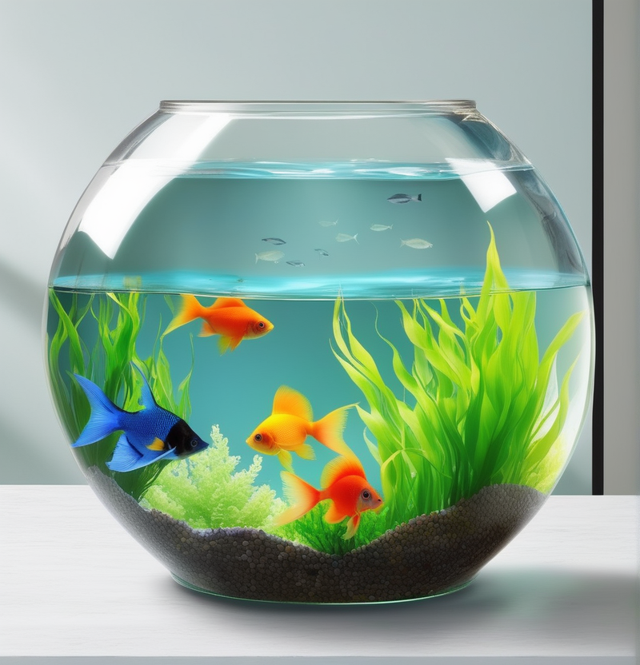

|  |
En la actualidad, la diversidad de peces de acuario disponibles es asombrosa, con una amplia gama de colores, formas y tamaños que han sido seleccionados y criados para deleitar a los amantes de los acuarios. Estos seres acuáticos han capturado la atención de muchos aficionados debido a su belleza, comportamientos únicos y la serenidad que aportan a los entornos acuáticos domésticos.
Los peces poseen sentidos adaptados a la vida en el agua, siendo su sistema de línea lateral especialmente importante para detectar movimientos y vibraciones en el entorno acuático. Su vista es aguda y, en algunos casos, pueden ver colores y patrones de luz que son invisibles para los humanos. Además, la mayoría de los peces son sensibles a los cambios en la calidad del agua, lo que destaca la importancia de mantener un ambiente acuático saludable. La inteligencia de los peces puede variar según la especie, pero muchos son capaces de aprender a reconocer a sus cuidadores y mostrar comportamientos interesantes, como la formación de cardúmenes o la construcción de nidos. La variedad de comportamientos y adaptaciones de los peces es fascinante para observar en un entorno acuático bien cuidado.